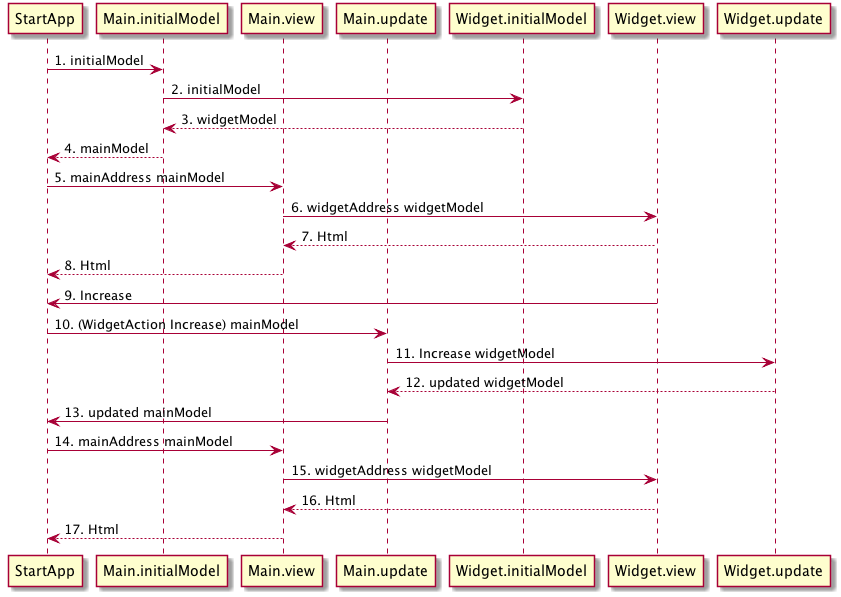

Composing
One of the big benefits from using the Elm architecture is the way it handles composition of components. To understand this let's build an example:
- We will have a parent component
App - And a child component
Widget
Child component
Let's begin with the child component. This is the code for Widget.elm.
https://github.com/sporto/elm-tutorial-assets/blob/master/code/C030ElmArch/Composing/Widget.elm
module Widget (..) where
import Html exposing (Html)
import Html.Events as Events
-- MODEL
type alias Model =
{ count : Int
}
initialModel : Model
initialModel =
{ count = 0
}
type Action
= Increase
-- VIEW
view : Signal.Address Action -> Model -> Html
view address model =
Html.div
[]
[ Html.div [] [ Html.text (toString model.count) ]
, Html.button
[ Events.onClick address Increase
]
[ Html.text "Click" ]
]
-- UPDATE
update : Action -> Model -> Model
update action model =
case action of
Increase ->
{ model | count = model.count + 1 }
This component should be straightforward to understand as it is nearly identical to the application that we made in the last section.
This component has:
- a
Model - actions i.e.
Increase - a
viewthat displays the counter and a button for increasing it - an
updatefunction that responds to theIncreaseaction and changes the model
Note how the component only knows about things declared here. Both view and update only use types declared within the component (Action and Model).
The parent component
This is the code for the parent component.
https://github.com/sporto/elm-tutorial-assets/blob/master/code/C030ElmArch/Composing/App.elm
module Main (..) where
import Html exposing (Html)
import StartApp.Simple
import Widget as Widget
-- MODEL
type alias AppModel =
{ widgetModel : Widget.Model
}
initialModel : AppModel
initialModel =
{ widgetModel = Widget.initialModel
}
type Action
= WidgetAction Widget.Action
-- VIEW
view : Signal.Address Action -> AppModel -> Html
view address model =
Html.div
[]
[ Widget.view (Signal.forwardTo address WidgetAction) model.widgetModel
]
-- UPDATE
update : Action -> AppModel -> AppModel
update action model =
case action of
WidgetAction subAction ->
let
updatedWidgetModel =
Widget.update subAction model.widgetModel
in
{ model | widgetModel = updatedWidgetModel }
-- START APP
main : Signal.Signal Html
main =
StartApp.Simple.start
{ model = initialModel
, view = view
, update = update
}
Let's break this down.
Model
type alias AppModel =
{ widgetModel : Widget.Model
}
The parent component has its own model. One of the attribute on the model contains the Widget.Model. Note how this parent component doesn't need to know about what Widget.Model is.
initialModel : AppModel
initialModel =
{ widgetModel = Widget.initialModel
}
When creating the initial application model, we simply call Widget.initialModel from here.
If you were to have multiple children components you would do the same for each, for example:
initialModel : AppModel
initialModel =
{ navModel = Nav.initialModel,
, sidebarModel = Sidebar.initialModel,
, widgetModel = Widget.initialModel
}
Or we could have multiple children components of the same type:
initialModel : AppModel
initialModel =
{ widgetModels = [Widget.initialModel]
}
Actions
type Action
= WidgetAction Widget.Action
We use an union type that wraps Widget.Action to indicate that an action belongs to that component.
In an application with multiple chidlren components we could have something like:
type Action
= NavAction Nav.Action
| SidebarAction Sidebar.Action
| WidgetAction Widget.Action
view
view : Signal.Address Action -> AppModel -> Html
view address model =
Html.div
[]
[ Widget.view (Signal.forwardTo address WidgetAction) model.widgetModel
]
The main application view renders the Widget.view. But Widget.view expects an address of type Widget.Action. And expects a model of type Widget.Model.
- We use
Signal.forwardToto create the expected address by the children component. - We only pass the part of the model that the children component cares about i.e.
model.widgetModel.
update
update : Action -> AppModel -> AppModel
update action model =
case action of
WidgetAction subAction ->
let
updatedWidgetModel =
Widget.update subAction model.widgetModel
in
{ model | widgetModel = updatedWidgetModel }
When a WidgetAction is received by update we delegate the update to the children component. But the children component will only update what it cares about, which is the widgetModel attribute.
We use pattern matching to extract the subAction from WidgetAction. This subAction will be the type that Widget.update expects.
Using this subAction and model.widgetModel we call Widget.update. This will return an updated widgetModel that can be used to replace the existing attribute in the main model.
Here is a diagram that illustrates this architecture:

- StartApp calls Main.initialModel
- Main calls Widget.initialModel
- Widget returns an initial model
- Main returns a composed main model which includes the widget model
- StartApp calls Main.view, passing the root address and the main model
- Main.view calls Widget.view, passing a forwarding address and the widgetModel part from the main model
- Widget.view returns the rendered Html to Main
- Main.view returns the rendered Html to StartApp
- Upon clicking on the increase button the action Increase is send to StartApp through the forwarding address set before. This address tags the action with WidgetAction
- StartApp calls Main.update with this action and the main model
- As the action was tagged with WidgetAction, Main.update delegates the update to Widget.update, sending along the way the widgetModel part of the main model
- Widget.update modifies the model according to the given action, in this case Increase. And returns the modifies widgetModel to Main.update
- Main.update updates the main model and returns it to StartApp
- StartApp then renders the view again passing the update main model
Key points
- The Elm architecture offers a clean way to compose (or nest) components as many levels as you need.
- Children components do not need to know anything about the parent. They define their own types and actions.
- If a child components needs something in particular (e.g. an additional address) it "asks" for it by using the function signatures. The parent is responsible for providing what the children need.
- A parent doesn't need to know what is in its children models or what their actions are. It only needs to provide what its children asks.